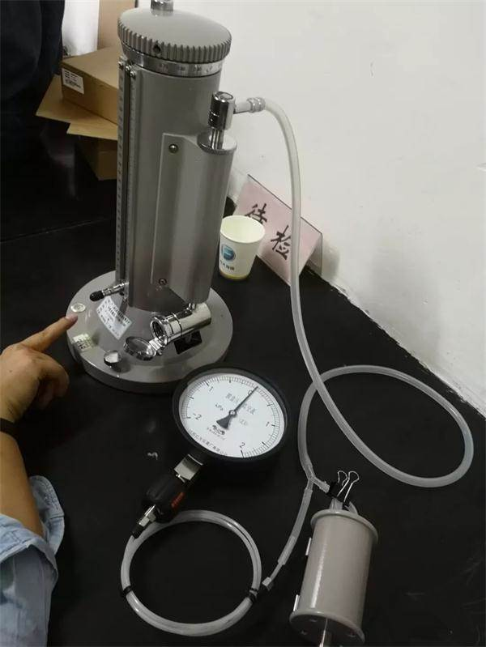
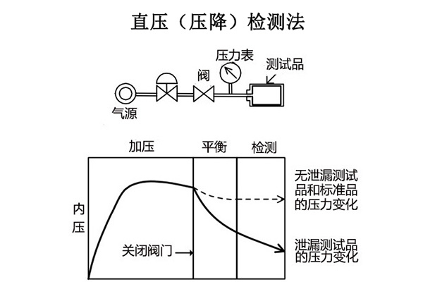

حل اختبار الإحكام لجميع السيناريوهات — لحماية فحص الجودة النهائي
في التصنيع الحديث، لا يعد الفحص النهائي مجرد نقطة التفتيش الأخيرة لمراقبة الجودة، بل هو خط الحياة لسمعة العلامة التجارية. ومع التطور المستمر في تقنيات المعالجة الصناعية، أصبحت التسريبات أصغر وأكثر خفاءً، مما يجعل الطرق التقليدية غير كافية لضمان هذا الخط الدفاعي. وبالاعتماد على سنوات من الخبرة التقنية، أطلقت WAFU Brothers حلاً شاملاً لاختبار الإحكام يساعد الشركات المصنعة على الحفاظ بصرامة على قاعدة “عدم التسرب” قبل خروج المنتجات من المصنع.
1. لماذا يعتبر اختبار إحكام المنتج مهمًا جدًا؟
سواء كانت أجهزة إلكترونية أو أجزاء سيارات أو أدوات طبية أو أجهزة منزلية، فإن مشكلات التسرب قد تسبب مخاطر سلامة وخسائر اقتصادية:
- انخفاض الأداء: تراجع مستوى مقاومة الماء مما يؤثر على عمر المنتج
- مخاطر السلامة: قد يؤدي تسرب الصمامات الغازية أو الأوعية المضغوطة إلى حوادث
- شكاوى العملاء: زيادة تكاليف ما بعد البيع والإضرار بصورة العلامة التجارية
يتيح اختبار الإحكام اكتشاف التسريبات الدقيقة قبل تسليم المنتج، مما يمنع المشكلات من الوصول إلى السوق من المصدر.
2. نقاط الألم الصناعية في استخدام طرق الاختبار بالماء
في الماضي، اختارت معظم الشركات طرق الاختبار بالماء (مثل اختبار الغمر أو الرش) للتحقق من إحكام المنتجات. وعلى الرغم من كونها طرقًا مباشرة، إلا أنها تعاني من عيوب واضحة:

- 1. مع تطور العمليات الصناعية، يصبح اكتشاف العديد من التسريبات الدقيقة أمرًا صعبًا.
- 2. وقت اختبار طويل وغير مناسب للإنتاج الضخم.
- 3. اعتماد كبير على البيئة؛ حيث تؤثر درجة حرارة الماء والضغط على النتائج.
- 4. اختبار تدميري؛ فإذا دخل الماء إلى المنتج قد تكون تكلفة الإصلاح مرتفعة.
هذه التحديات تجعل الشركات في حالة تردد بين الجودة والتكلفة.
3. استخدام حل اختبار الإحكام لجميع السيناريوهات
من خلال خبرة تمتد إلى 16 عامًا في المجال، عالجت WAFU Brothers العديد من تحديات الاختبار الشائعة من خلال تقديم حل شامل للاختبار باستخدام الغاز، مع التركيز على التكنولوجيا والذكاء والخدمة لبناء نظام أمان متعدد المستويات “لعدم التسرب” في التصنيع.
1. تكامل متعدد التقنيات: بناء حاجز قوي للاختبار غير التدميري وعالي الدقة
ندمج تقنيات اختبار متقدمة مثل انخفاض الضغط الإيجابي، انخفاض الفراغ، المقارنة بالضغط التفاضلي، وكشف التسرب باستخدام مطياف كتلة الهيليوم. بالنسبة للسيناريوهات ذات الحجم الكبير والضغط العالي مثل كتل محرك السيارات وخزانات الغاز عالية الضغط، تعمل أجهزة انخفاض الضغط الإيجابي كـ "كشّافين" يستخدمون الغاز عالي الضغط لمراقبة انخفاض الضغط بدقة وتحديد التسريبات الصغيرة بسرعة. وفي المجالات الحساسة جدًا للتسريبات الدقيقة مثل الأجهزة الطبية وأشباه الموصلات، تعمل أجهزة مطياف كتلة الهيليوم كـ “مجهر إلكتروني”، بفضل حساسيتها فائقة الدقة. أما طريقة الضغط التفاضلي وانخفاض الفراغ فتتفوق في الاختبار السريع والدقيق للإلكترونيات الاستهلاكية والأجهزة المنزلية من خلال تحليل تغيّر الضغط تحت التفريغ أو بالمقارنة مع أجزاء قياسية. تشكل هذه التقنيات معًا مصفوفة اختبار شاملة تغطي جميع الصناعات والسيناريوهات. كما أن جميع عمليات الاختبار غير تدميرية، مما يمنع أي ضرر ثانوي للمنتجات، وتتوافق مع معيار ASTM E498-20 للاختبار غير التدميري.

2. تعويض درجة الحرارة ونظام الحد من الضوضاء الذكي
تدمج WAFU Brothers تقنيات متقدمة مثل الذكاء الاصطناعي وإنترنت الأشياء والبيانات الضخمة في أجهزة اختبار الإحكام لمعالجة تأثيرات درجة الحرارة والضوضاء على نتائج الاختبار. ومن خلال التعلم المستمر، تُحقق أجهزة الشركة تعويضًا دقيقًا لدرجة الحرارة وقدرة على التعرف على الضوضاء وإزالتها، مما يعزز كفاءة الاختبار بأكثر من 60%، ويسهل دمجها في خطوط الإنتاج الآلية!
4. نتائج التطبيقات الواقعية
1. اختبار إحكام غطاء محرك السيارة
اعتمدت شركة Audi أجهزة اختبار الإحكام من WAFU Brothers لإجراء فحص شامل للمكونات الأساسية مثل أغطية المحرك وخطوط الوقود وناقلات الحركة. وقد ساعد ذلك في اكتشاف التسريبات الدقيقة التي يقل حجمها عن 0.1 مم² ومعالجتها. ونتيجة لذلك، انخفضت تكاليف إعادة العمل بمقدار 8 ملايين يوان، وتراجعت معدلات الفشل في السوق بنسبة 65%، مما عزز سلامة وموثوقية مجموعة الطاقة ورسّخ ريادة العلامة التجارية.

2. اختبار إحكام مقبس الشحن للطاقة الجديدة
اعتمدت شركات سيارات معروفة مثل FAW Audi ومجموعة GAC أجهزة اختبار الإحكام من WAFU Brothers وحل الاختبار الشامل، مما أتاح دمجًا مثاليًا مع خطوط تجميع السيارات وزيادة كبيرة في كفاءة الإنتاج.
3. اختبار منتجات الإلكترونيات الاستهلاكية
قامت WAFU Brothers بتخصيص حل اختبار إحكام أوتوماتيكي لأحد مصنّعي الهواتف الذكية، من خلال دمج أجهزة الضغط التفاضلي مع خط الإنتاج الآلي. تم تقليل وقت اختبار مقاومة الماء لكل هاتف إلى 6 ثوانٍ، مع قدرة اختبار يومية تصل إلى 30,000 وحدة، مع الحفاظ على دقة مرتفعة وثابتة. وقد ساعد هذا الحل الشركة على تلبية متطلبات السوق العالية لمقاومة الماء والغبار، وتحسين كفاءة الإنتاج وخفض معدل شكاوى المنتجات بنسبة 70%.
5. التطلعات المستقبلية: تعزيز خط الدفاع التقني “لعدم التسرب”
في المستقبل، ستواصل WAFU Brothers تعزيز استثمارات البحث والتطوير. تقنيًا، ستطوّر تقنيات اختبار عالية الأمان مناسبة لحزم بطاريات السيارات الكهربائية ومعدات تخزين الهيدروجين. وعلى مستوى الذكاء، ستعمل على تطوير أجهزة اختبار قادرة على التعلم الذاتي والتحسين المستمر.